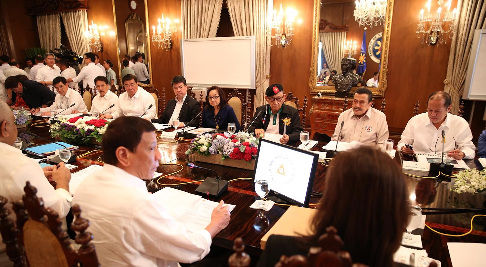
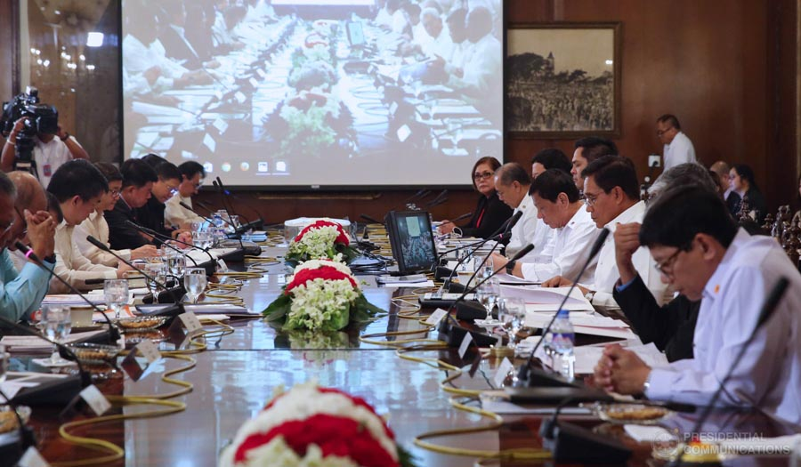
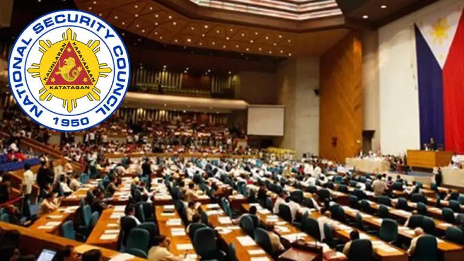

NATIONAL SECURITY COUNCIL OF THE PHILIPPINES



The National Security Council (NSC; Filipino: Sanggunian sa Pambansang Seguridad) is the principal forum of the president of the Philippines considering national security and foreign policy matters with his senior national security advisors and cabinet officials. The NSC consists of two distinct bodies - the Council Proper and the National Security Council Secretariat. The Council Proper is a collegial body chaired by the President. It includes concerned officials of the Cabinet and Congress, as members, as well as other government officials and private citizens who may be invited by the President.
The Council was created during the Quirino Administration through Executive Order (EO) No. 330, dated 01 July 1950. It was reorganized by virtue of EO No. 115, series of 1986. The NSC Secretariat is a permanent body that provides technical support to the Council Proper. It is headed by the Director General / National Security Adviser.